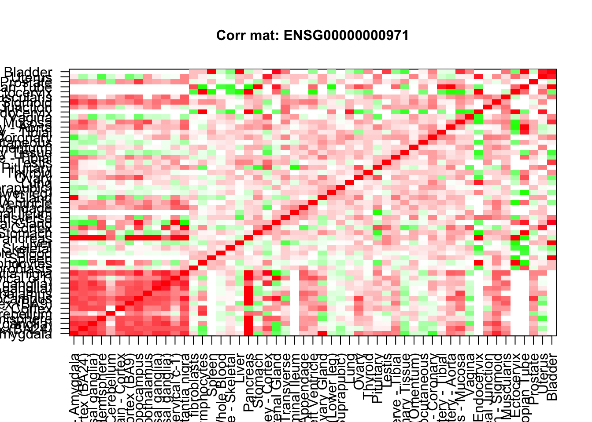
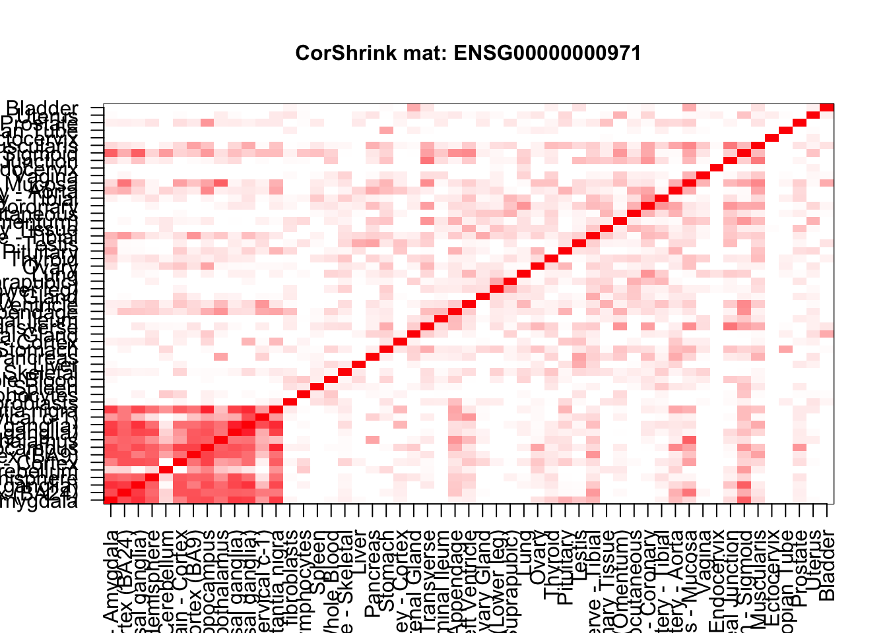
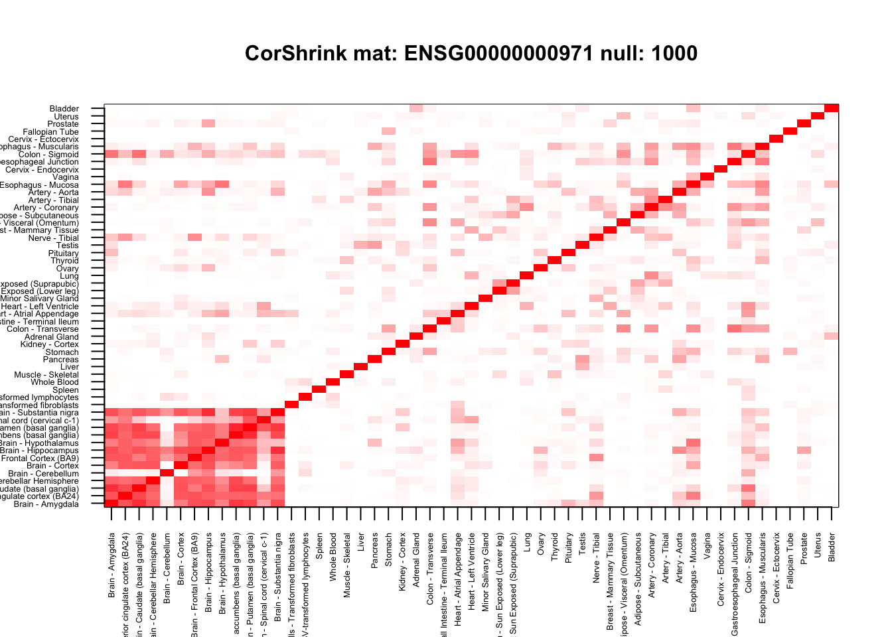
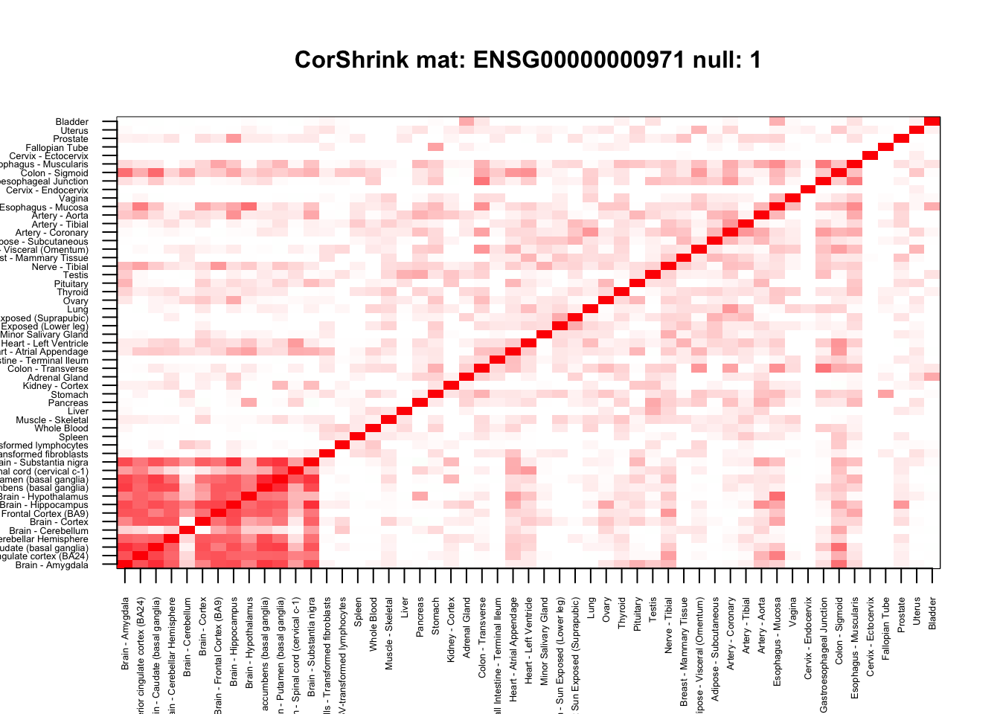
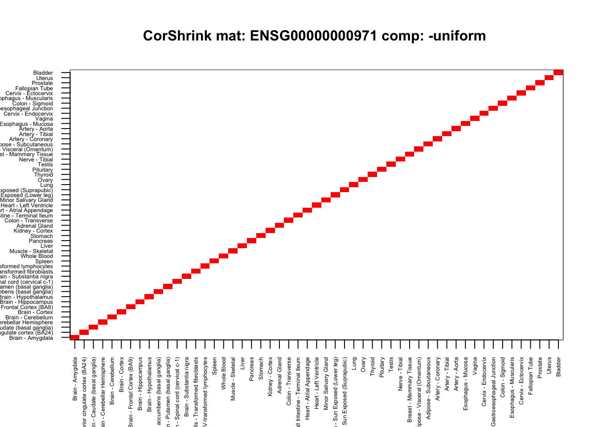
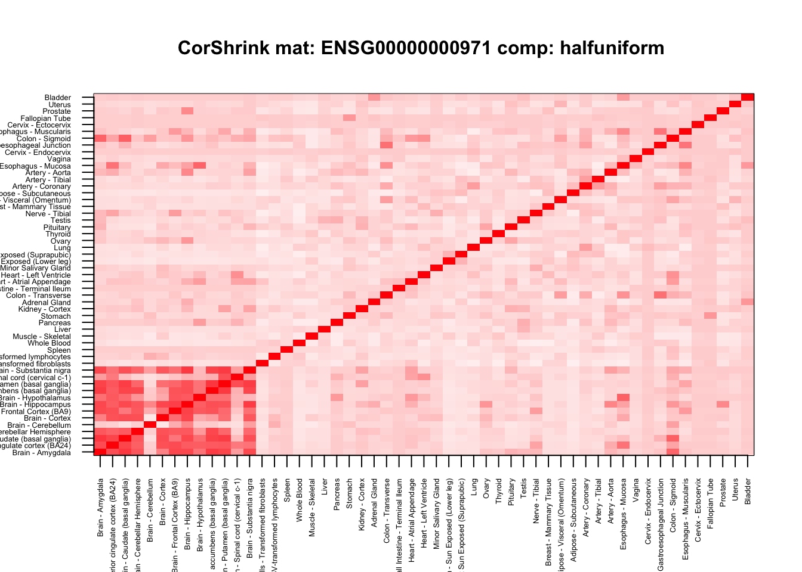
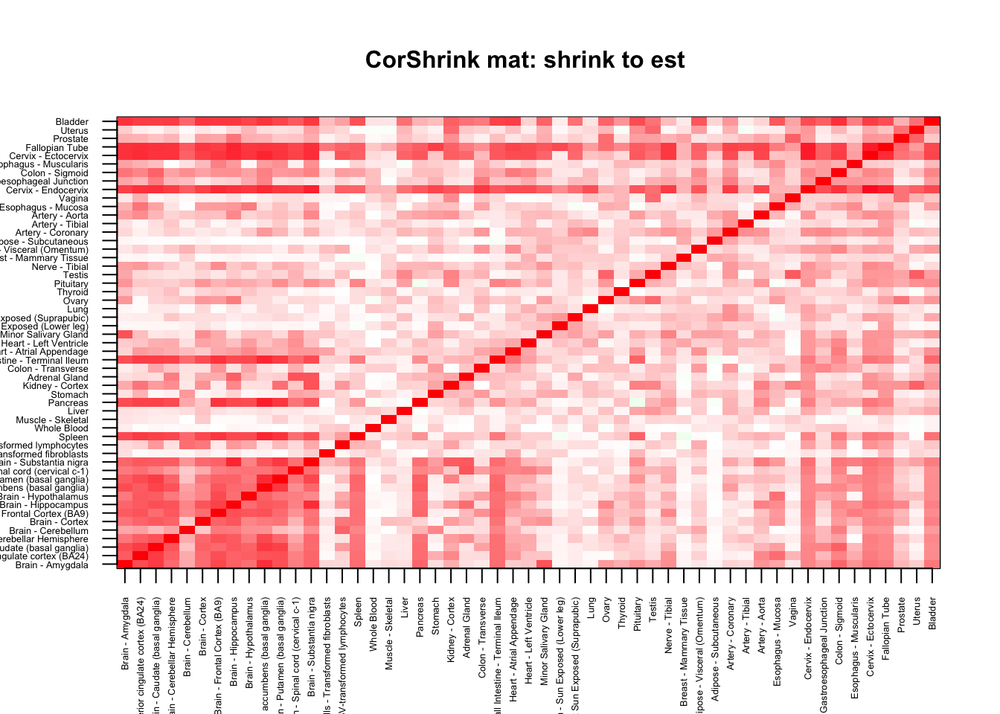

Last updated: 2017-05-19
Code version: 716e30d
We propose CorShrink as a method to clean up the correlation matrix adaptively specially when the correlation values have varying degree of confidence attached to them as in the GTEx case, since the correlation between two tissues are based on the number of common persons contributing both these tissues, which may vary widely from one tissue to another.
cor_result <- get(load("../output/cor_tissues_non_ash.rda"))
common_samples <- get(load("../output/common_samples.rda"))
tissue_labels <- read.table(file = "../data/GTEX_V6/samples_id.txt")[,3]
gene_names <- as.character(read.table(file = "../data/GTEX_V6/gene_names_GTEX_V6.txt")[,1])
gene_names_1 <- as.character(sapply(gene_names, function(x) return(strsplit(x, "[.]")[[1]][1])))
U <- unique(tissue_labels)An example correlation plot
num <- 5
plot.new()
cor_mat <- diag(1,53)+cor_result[,,num]
col=c(rev(rgb(seq(1,0,length=1000),1, seq(1,0,length=1000))),
rgb(1,seq(1,0,length=1000),seq(1,0,length=1000)))
image(as.matrix(cor_mat)[order_index, order_index], col=col,
main=paste0("Corr mat: ", gene_names_1[num]), cex.main=1, xaxt = "n", yaxt = "n", zlim= c(-1,1))
axis(1, at = seq(0, 1, length.out = ncol(cor_result[,,1])), labels = U[order_index], las=2, cex.axis = 1)
axis(2, at = seq(0, 1, length.out = ncol(cor_result[,,1])), labels = U[order_index], las=2, cex.axis = 1)
Looks messy isn’t it, lets see how corshrink adjusted matrix looks like.
library(CorShrink)
source("../../CorShrink/R/CorShrinkML.R")
system.time(cor_sample_ML <- CorShrinkML(cor_mat, nsamp_mat = as.matrix(common_samples), sd_boot = FALSE, ash.control = list(mixcompdist = "normal")))ash cor only and ash cor PD matrices are different user system elapsed
0.416 0.179 0.604 col=c(rev(rgb(seq(1,0,length=1000),1,seq(1,0,length=1000))),
rgb(1,seq(1,0,length=1000),seq(1,0,length=1000)))
image(as.matrix(cor_sample_ML$ash_cor_only)[order_index, order_index],
col=col, main=paste0("CorShrink mat: ", gene_names_1[num]), cex.main=1,
xaxt = "n", yaxt = "n", zlim=c(-1,1))
axis(1, at = seq(0, 1, length.out = ncol(cor_result[,,1])), labels = U[order_index], las=2, cex.axis = 1)
axis(2, at = seq(0, 1, length.out = ncol(cor_result[,,1])), labels = U[order_index], las=2, cex.axis = 1)
num <- 5
cor_mat <- diag(1,53)+cor_result[,,num]
system.time(cor_sample_ML <- CorShrinkML(cor_mat, common_samples, sd_boot = FALSE,
ash.control = list(mixcompdist = "normal",
nullweight = 100)))ash cor only and ash cor PD matrices are different user system elapsed
0.307 0.118 0.445 col=c(rev(rgb(seq(1,0,length=1000),1,seq(1,0,length=1000))),
rgb(1,seq(1,0,length=1000),seq(1,0,length=1000)))
image(as.matrix(cor_sample_ML$ash_cor_PD)[order_index, order_index],
col=col, main=paste0("CorShrink mat: ", gene_names_1[num], " null: ", 100), cex.main=1,
xaxt = "n", yaxt = "n", zlim=c(-1,1))
axis(1, at = seq(0, 1, length.out = ncol(cor_result[,,1])), labels = U[order_index], las=2, cex.axis = 0.4)
axis(2, at = seq(0, 1, length.out = ncol(cor_result[,,1])), labels = U[order_index], las=2, cex.axis = 0.4)system.time(cor_sample_ML <- CorShrinkML(cor_mat, common_samples, sd_boot = FALSE,
ash.control = list(mixcompdist = "normal",
nullweight = 1000)))ash cor only and ash cor PD matrices are different user system elapsed
0.211 0.063 0.283 col=c(rev(rgb(seq(1,0,length=1000),1,seq(1,0,length=1000))),
rgb(1,seq(1,0,length=1000),seq(1,0,length=1000)))
image(as.matrix(cor_sample_ML$ash_cor_PD)[order_index,order_index],
col=col, main=paste0("CorShrink mat: ", gene_names_1[num], " null: ", 1000), cex.main=1,
xaxt = "n", yaxt = "n", zlim=c(-1,1))
axis(1, at = seq(0, 1, length.out = ncol(cor_result[,,1])), labels = U[order_index], las=2, cex.axis = 0.4)
axis(2, at = seq(0, 1, length.out = ncol(cor_result[,,1])), labels = U[order_index], las=2, cex.axis = 0.4)
system.time(cor_sample_ML <- CorShrinkML(cor_mat, common_samples, sd_boot = FALSE,
ash.control = list(mixcompdist = "normal",
nullweight = 10)))ash cor only and ash cor PD matrices are different user system elapsed
0.331 0.119 0.454 col=c(rev(rgb(seq(1,0,length=1000),1,seq(1,0,length=1000))),
rgb(1,seq(1,0,length=1000),seq(1,0,length=1000)))
image(as.matrix(cor_sample_ML$ash_cor_PD)[order_index,order_index],
col=col, main=paste0("CorShrink mat: ", gene_names_1[num], " null: ", 10), cex.main=1,
xaxt = "n", yaxt = "n", zlim=c(-1,1))
axis(1, at = seq(0, 1, length.out = ncol(cor_result[,,1])), labels = U[order_index], las=2, cex.axis = 0.4)
axis(2, at = seq(0, 1, length.out = ncol(cor_result[,,1])), labels = U[order_index], las=2, cex.axis = 0.4)system.time(cor_sample_ML <- CorShrinkML(cor_mat, common_samples, sd_boot = FALSE,
ash.control = list(mixcompdist = "normal",
nullweight = 1)))ash cor only and ash cor PD matrices are different user system elapsed
0.945 0.419 1.375 col=c(rev(rgb(seq(1,0,length=1000),1,seq(1,0,length=1000))),
rgb(1,seq(1,0,length=1000),seq(1,0,length=1000)))
image(as.matrix(cor_sample_ML$ash_cor_PD)[order_index,order_index],
col=col, main=paste0("CorShrink mat: ", gene_names_1[num], " null: ", 1), cex.main=1,
xaxt = "n", yaxt = "n", zlim=c(-1,1))
axis(1, at = seq(0, 1, length.out = ncol(cor_result[,,1])), labels = U[order_index], las=2, cex.axis = 0.4)
axis(2, at = seq(0, 1, length.out = ncol(cor_result[,,1])), labels = U[order_index], las=2, cex.axis = 0.4)
###################### different types of ash (uniform) ###############################
num <- 5
cor_mat <- diag(1,53)+cor_result[,,num]
system.time(cor_sample_ML <- CorShrinkML(cor_mat, common_samples, sd_boot = FALSE,
ash.control = list(mixcompdist = "uniform",
nullweight = 10)))ash cor only and ash cor PD matrices are different user system elapsed
0.519 0.143 0.667 col=c(rev(rgb(seq(1,0,length=1000),1,seq(1,0,length=1000))),
rgb(1,seq(1,0,length=1000),seq(1,0,length=1000)))
image(as.matrix(cor_sample_ML$ash_cor_PD)[order_index,order_index],
col=col, main=paste0("CorShrink mat: ", gene_names_1[num], " comp: uniform "), cex.main=1,
xaxt = "n", yaxt = "n", zlim=c(-1,1))
axis(1, at = seq(0, 1, length.out = ncol(cor_result[,,1])), labels = U[order_index], las=2, cex.axis = 0.4)
axis(2, at = seq(0, 1, length.out = ncol(cor_result[,,1])), labels = U[order_index], las=2, cex.axis = 0.4)system.time(cor_sample_ML <- CorShrinkML(cor_mat, common_samples, sd_boot = FALSE,
ash.control = list(mixcompdist = "+uniform",
nullweight = 10)))ash cor only and ash cor PD matrices are different user system elapsed
0.535 0.158 0.698 col=c(rev(rgb(seq(1,0,length=1000),1,seq(1,0,length=1000))),
rgb(1,seq(1,0,length=1000),seq(1,0,length=1000)))
image(as.matrix(cor_sample_ML$ash_cor_PD)[order_index,order_index],
col=col,main=paste0("CorShrink mat: ", gene_names_1[num], " comp: +uniform "), cex.main=1,
xaxt = "n", yaxt = "n", zlim=c(-1,1))
axis(1, at = seq(0, 1, length.out = ncol(cor_result[,,1])), labels = U[order_index], las=2, cex.axis = 0.4)
axis(2, at = seq(0, 1, length.out = ncol(cor_result[,,1])), labels = U[order_index], las=2, cex.axis = 0.4)
system.time(cor_sample_ML <- CorShrinkML(cor_mat, common_samples, sd_boot = FALSE,
ash.control = list(mixcompdist = "normal",
nullweight = 10)))ash cor only and ash cor PD matrices are different user system elapsed
0.336 0.123 0.472 col=c(rev(rgb(seq(1,0,length=1000),1,seq(1,0,length=1000))),
rgb(1,seq(1,0,length=1000),seq(1,0,length=1000)))
image(as.matrix(cor_sample_ML$ash_cor_PD)[order_index,order_index],
col=col, main=paste0("CorShrink mat: ", gene_names_1[num], " comp: normal "), cex.main=1,
xaxt = "n", yaxt = "n", zlim=c(-1,1))
axis(1, at = seq(0, 1, length.out = ncol(cor_result[,,1])), labels = U[order_index], las=2, cex.axis = 0.4)
axis(2, at = seq(0, 1, length.out = ncol(cor_result[,,1])), labels = U[order_index], las=2, cex.axis = 0.4)system.time(cor_sample_ML <- CorShrinkML(cor_mat, common_samples, sd_boot = FALSE,
ash.control = list(mixcompdist = "-uniform",
nullweight = 10)))ash cor only and ash cor PD matrices are different user system elapsed
0.376 0.086 0.465 col=c(rev(rgb(seq(1,0,length=1000),1,seq(1,0,length=1000))),
rgb(1,seq(1,0,length=1000),seq(1,0,length=1000)))
image(as.matrix(cor_sample_ML$ash_cor_PD)[order_index,order_index],
col=col, main=paste0("CorShrink mat: ", gene_names_1[num], " comp: -uniform "), cex.main=1,
xaxt = "n", yaxt = "n", zlim=c(-1,1))
axis(1, at = seq(0, 1, length.out = ncol(cor_result[,,1])), labels = U[order_index], las=2, cex.axis = 0.4)
axis(2, at = seq(0, 1, length.out = ncol(cor_result[,,1])), labels = U[order_index], las=2, cex.axis = 0.4)
system.time(cor_sample_ML <- CorShrinkML(cor_mat, common_samples, sd_boot = FALSE,
ash.control = list(mixcompdist = "halfuniform",
nullweight = 10,
mode = 0)))ash cor only and ash cor PD matrices are different user system elapsed
0.951 0.392 1.365 col=c(rev(rgb(seq(1,0,length=1000),1,seq(1,0,length=1000))),
rgb(1,seq(1,0,length=1000),seq(1,0,length=1000)))
image(as.matrix(cor_sample_ML$ash_cor_PD)[order_index,order_index],
col=col, main=paste0("CorShrink mat: ", gene_names_1[num], " comp: halfuniform "), cex.main=1,
xaxt = "n", yaxt = "n", zlim=c(-1,1))
axis(1, at = seq(0, 1, length.out = ncol(cor_result[,,1])), labels = U[order_index], las=2, cex.axis = 0.4)
axis(2, at = seq(0, 1, length.out = ncol(cor_result[,,1])), labels = U[order_index], las=2, cex.axis = 0.4)
system.time(cor_sample_ML <- CorShrinkML(cor_mat, common_samples, sd_boot = FALSE,
ash.control = list(mixcompdist = "normal",
nullweight = 10,
mode = "estimate")))ash cor only and ash cor PD matrices are different user system elapsed
0.884 0.250 1.142 col=c(rev(rgb(seq(1,0,length=1000),1,seq(1,0,length=1000))),
rgb(1,seq(1,0,length=1000),seq(1,0,length=1000)))
image(as.matrix(cor_sample_ML$ash_cor_PD)[order_index,order_index],
col=col, main=paste0("CorShrink mat: shrink to est "), cex.main=1,
xaxt = "n", yaxt = "n", zlim=c(-1,1))
axis(1, at = seq(0, 1, length.out = ncol(cor_result[,,1])), labels = U[order_index], las=2, cex.axis = 0.4)
axis(2, at = seq(0, 1, length.out = ncol(cor_result[,,1])), labels = U[order_index], las=2, cex.axis = 0.4)
sessionInfo()R version 3.3.3 (2017-03-06)
Platform: x86_64-apple-darwin13.4.0 (64-bit)
Running under: macOS Sierra 10.12
locale:
[1] en_US.UTF-8/en_US.UTF-8/en_US.UTF-8/C/en_US.UTF-8/en_US.UTF-8
attached base packages:
[1] stats graphics grDevices utils datasets methods base
other attached packages:
[1] knitr_1.15.1 CorShrink_0.99.0 workflowr_0.4.0 rmarkdown_1.5
loaded via a namespace (and not attached):
[1] Biobase_2.34.0 httr_1.2.1
[3] jsonlite_1.4 splines_3.3.3
[5] foreach_1.4.3 gsubfn_0.6-6
[7] Formula_1.2-1 expm_0.999-2
[9] highr_0.6 stats4_3.3.3
[11] latticeExtra_0.6-28 Rsamtools_1.26.1
[13] yaml_2.1.14 RSQLite_1.1-2
[15] backports_1.0.5 lattice_0.20-35
[17] chron_2.3-50 digest_0.6.12
[19] GenomicRanges_1.26.1 RColorBrewer_1.1-2
[21] XVector_0.14.0 checkmate_1.8.2
[23] colorspace_1.3-2 htmltools_0.3.6
[25] Matrix_1.2-8 plyr_1.8.4
[27] XML_3.98-1.6 biomaRt_2.30.0
[29] zlibbioc_1.20.0 corpcor_1.6.9
[31] scales_0.4.1 glasso_1.8
[33] BiocParallel_1.8.2 git2r_0.18.0
[35] htmlTable_1.9 tibble_1.3.1
[37] sqldf_0.4-10 IRanges_2.8.1
[39] ggplot2_2.2.1 SummarizedExperiment_1.4.0
[41] GenomicFeatures_1.26.0 ashr_2.0.5
[43] nnet_7.3-12 BiocGenerics_0.20.0
[45] lazyeval_0.2.0 proto_1.0.0
[47] survival_2.41-3 magrittr_1.5
[49] memoise_1.1.0 evaluate_0.10
[51] doParallel_1.0.10 MASS_7.3-45
[53] foreign_0.8-67 truncnorm_1.0-7
[55] rsconnect_0.7 tools_3.3.3
[57] data.table_1.10.4 REBayes_0.73
[59] stringr_1.2.0 S4Vectors_0.12.0
[61] munsell_0.4.3 cluster_2.0.6
[63] AnnotationDbi_1.36.0 Biostrings_2.42.0
[65] GenomeInfoDb_1.10.1 rlang_0.1.1.9000
[67] grid_3.3.3 RCurl_1.95-4.8
[69] iterators_1.0.8 htmlwidgets_0.8
[71] bitops_1.0-6 base64enc_0.1-3
[73] gtable_0.2.0 codetools_0.2-15
[75] curl_2.6 DBI_0.6-1
[77] mygene_1.10.0 reshape2_1.4.2.9000
[79] R6_2.2.1 GenomicAlignments_1.10.1
[81] gridExtra_2.2.1 rtracklayer_1.34.1
[83] Hmisc_4.0-2 rprojroot_1.2
[85] stringi_1.1.5 pscl_1.4.9
[87] parallel_3.3.3 SQUAREM_2016.8-2
[89] Rcpp_0.12.10 rpart_4.1-10
[91] acepack_1.4.1 This R Markdown site was created with workflowr